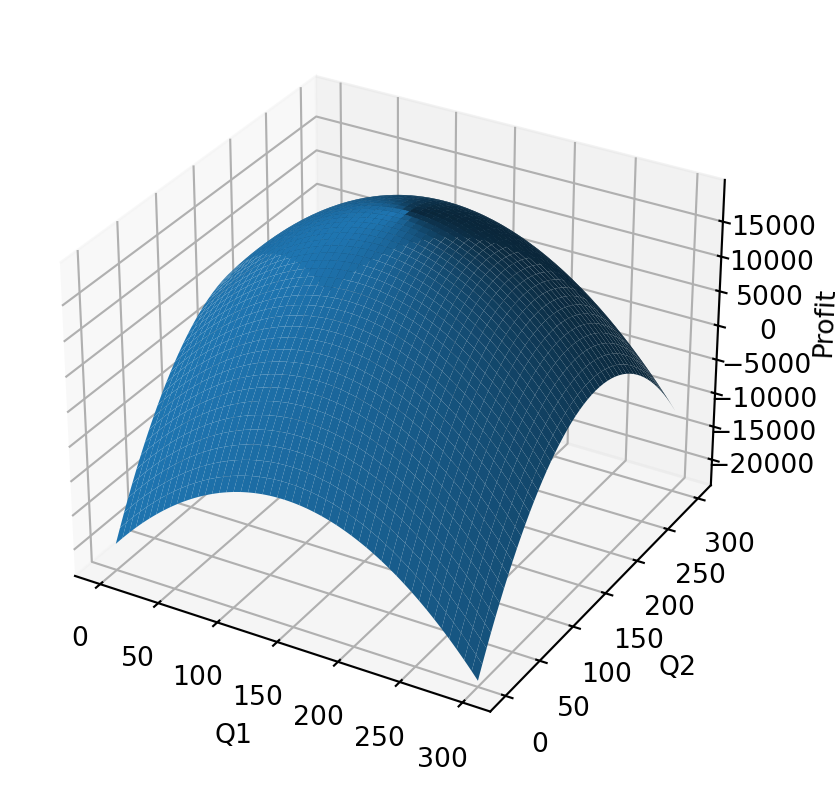
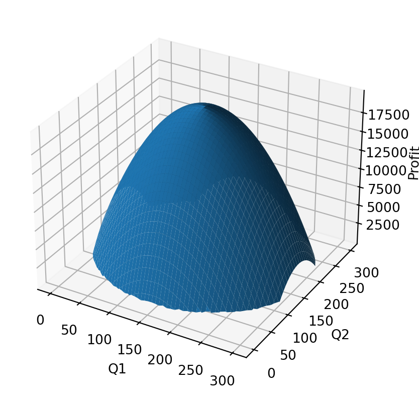

# quick set up for our plot
import matplotlib.pyplot as plt
from mpl_toolkits.mplot3d import Axes3D
import pandas as pd
import numpy as np
# create the framework for our plot
l1 = np.linspace(0, 300, 300)
k = np.linspace(0, 200, 300)
L1, K = np.meshgrid(l1, k)
# CALCULATE THE PRODUCTION FUNCTION
Q1 = np.sqrt(L1*K)Lecture 4: Non-linear Programing, Constrained Maximization
Items for reiteration:
- The lecture notes are posted on my website. I’ve added link to the location at the top of the canvas page.
- The lectures are not recorded. I am recording supplemental versions for the add drop period, if these are useful (and time allows) I will continue to make them.
- Please post your questions about course content on the canvas discussions for each lecture (they go live after the lecture).
- Thanks to those of you that have reached out with questions! I enjoy answering them, and it helps me a lot to see what is working and what is not.
- The review lectures will address everyone’s favorite question: “Dr. Morris, please tell me exactly what will be on the exam.”
- Note: The answer to the most popular questions seems to be: “Focus on setup and interpretation, not calculation.”
A note on incremental cost and marginal cost:
- Marginal Cost: as it’s used in economics (i.e. MR=MC under competition) is a mathmatical term: the derivative of the cost function w.r.t. quantity.
- Incremental Cost is a practical term: the change in cost for a one unit change in output.
The two are often interchangable, but we should know that they are different. They are the same when the cost curve is linear, they are intechangable whenever we decide that a linear approximation is suitable for our purposes.
In this exercise, we will use the incremental cost as a simple way to get an idea of how the marginal cost is changing.
Let’s go through the homework:
You manage a two-product firm. The production technology requires a mixture of capital and labor to produce each product. Capital is shared, while labor is specific to each of the two products. For the first product, capital (\(K \geq 0\)) and labor (\(L_1 \geq 0\)) must satisfy the following, in order to produce \(q_1\) units: \(q_{1} \leq \sqrt{KL_{1}}\). Likewise, producing \(q_2\) units of the second product requires capital (\(K\)) and labor (now \(L_2 \geq 0\)) such that: \(q_2 \leq\sqrt{KL_2}\). In addition, total capital is limited to a maximum of 200 units. (So \(K \leq 200\).) Naturally, \(K\), \(L_1\), \(L_2\) are all required to be non-negative. Capital costs 100 per unit, labor for the first product costs 140 per unit and labor for the second product costs 175 per unit. The first product sells for 275 per unit, and the second sells for 300 per unit.
- Initially suppose only the first product is present. Determine and interpret your optimal production plan.
- Next suppose only the second product is present. Determine and interpret your optimal production plan.
- Now assume both products are present. Determine and interpret your optimal production plan.
- Repeat the three parts above assuming the first product sells for 200 per unit.
- Fill in the following table:
| \(q_1\) | \(q_2\) | MC of \(q_1\) with \(q_2\) fixed. | MC of \(q_2\) with \(q_1\) fixed. |
|---|---|---|---|
| 50 | 50 | ||
| 50 | 100 | ||
| 50 | 150 | ||
| 100 | 50 | ||
| 100 | 100 | ||
| 100 | 150 | ||
| 150 | 100 | ||
| 150 | 150 |
(MC is the marginal cost, but for this exercise we can use one unit changes as a proxy for the marginal cost.)
Q 1: Determine and interpret your optimal production plan.
Start by thinking about what \(q_{1} \leq \sqrt{KL_{1}}\) and \(q_2 \leq\sqrt{KL_2}\) are?
A name for this sort of function is a “production function”
The expression \(q_{1} \leq \sqrt{KL_{1}}\) is the rate at which our production process changes inputs into outputs.
Notice that this even though there is a \(\leq\) sign, that this is not a constraint per se because we get to choose \(K\) and \(L_1\), and it is only that choice that constrains the amount of \(q_1\) that we produce.
Also notice that if we are trying to optimize we will never produce less than \(q_1=\sqrt{KL_{1}}\)
Exploring Production Functions:
Let’s look at some plots to see the implications of this.
Note that I’ll use python for the examples today, this is because it makes 3-d plotting easy, and I want you to think of these as list of steps.
Exploring Production Functions:
- Set up by loading the libraries and creating the framework for our plot.
Exploring Production Functions:

Capital Contraints:
What if we hold K fixed? What will the graph look like?
In Q1 = np.sqrt(L1*K) we will plug in values for K and let L1 vary.
Capital Contraints:
What if we hold K fixed? What will the graph look like?
Back to the question:
What is an optimal production plan?
- The one that maximizes profits!
- Subject to constraints.
- So the optimal production plan is the ones that maximizes \(R-C\) subject to the constraints in the problem.
Optimal production plan for \(q_1\) alone:
Maximize: \[\Pi = R - C\]
Let’s refer to the prices as “P”, and the labor and capital costs as “C”
\[ \Pi(P,C) \equiv P \times q_1 - C_L \times L_1 - C_K \times K \]
Plug in the P’s and C’s from the problem and then add the production function and capital constraints.
\[ \Pi(P,C) \equiv 275 \times q_1 - 140 \times L_1 - 100 \times K \] \[ q_1 \leq \sqrt{L_1 \times K} \] \[ K \leq \bar{K} = 200 \]
This makes it seem like we have more choices than we actually have. The constraint (production function) makes it so that we can only choose two of K, q1, and l1. So we can plug the production function in for labor or quantity (I choose labor to get rid of the sqrt)
\[ \Pi(P,C) \equiv 275 \times q_1 - 140 \times \frac{q_1^2}{K} - 100 \times K \] \[ K \leq \bar{K} = 200 \]
So what do we do with this?
\[ \Pi(P,C) \equiv 275 \times q_1 - 140 \times \frac{q_1^2}{K} - 100 \times K \] \[ K \leq \bar{K} = 200 \]
How do we choose the optimal production plan?
- Guess and check?
- Set up and solve a Legrangian :) I am not going to ask you to actually solve this by hand… you can do it with Excel and Python!
- Note that you can apply the steps we do here to any similar solver.
iPRS: How did you solve this?
Since this is not a linear problem let’s use GEKKO
(don’t worry… we will do this in Excel as well, and the exam will focus on setup and interpretation)
Step 1: Specify the ‘Choice Variables’ and their constraints
Step 2: Write down the objective function (what we want to maximize), any remaining constraints, and solve.
\[ \Pi(P,C) \equiv 275 \times q_1 - 140 \times \frac{q_1^2}{K} - 100 \times K \] What happened to \(K \leq \bar{K} = 200\)? (hint: it is a constraint on a choice variable look for it on the previous slide!)
Step 2 continued:
The output from the model is just the choice variables: we need to calculate profit and labor:
We need to calculate profit and labor:
Plug \(q_1 = 196.43\) and \(K=200\) into: \[\Pi(P,C) \equiv 275 \times q_1 - 140 \times \frac{q_1^2}{K} - 100 \times K \]
Step 2 continued:
Use the production function to calculate \(l_1=q_1^2/K\)
Step 2 continued:
This gives us the following solutions (note that I’m rounding here):
Optimal production plan for \(q_2\) alone:
Let’s refer to the prices as “P”, and the labor and capital costs as “C”
\[ \Pi(P,C) \equiv 300 \times q_2 - 175 \times L_2 - 100 \times K \] \[ q_2 \leq \sqrt{L_2 \times K} \] \[ K \leq \bar{K} = 200 \]
We make a similar substitution here:
\[ \Pi(P,C) \equiv 300 \times q_2 - 175 \times \frac{q_2^2}{K} - 100 \times K \] \[ K \leq \bar{K} = 200 \]
Write down the objective function again and solve:
\[ \Pi(P,C) \equiv + 300 \times q_2 - 175 \times \frac{q_2^2}{K} - 100 \times K \]
This gives us the following solutions
(note that I’m rounding here)
Optimal production plan for both:
Let’s refer to the prices as “P”, and the labor and capital costs as “C” \[ \Pi(P,C) \equiv 275 \times q_1 + 300 \times q_2 - 140 \times L_1 - 175 \times L_2 - 100 \times K \] \[ q_1 \leq \sqrt{L_1 \times K} \] \[ q_2 \leq \sqrt{L_2 \times K} \] \[ K \leq \bar{K} = 200 \]
Again both constraints allow us to eliminate \(L\): \[ \Pi(P,C) \equiv 275 \times q_1 + 300 \times q_2 - 140 \times \frac{q_1^2}{K} - 175 \times \frac{q_2^2}{K} - 100 \times K \] \[ K \leq \bar{K} = 200 \]
This gives us the following solutions
(note that I’m rounding here)
We always pick k=200. What does this mean?
- This means that the capital constraint is preventing us from making the next unit of output.
- When a constraint does this we often call it a ‘binding constraint’.
The q1,L1 and q2,L2 pairs that we pick are the same when we consider the products separately and together. What does this mean?
- It means that the profit function is separable when the capital constraint is binding.
Repeat all three steps with \(P_1=200\)
m = GEKKO(remote=False)
q1 = m.Var(name="q1", lb=0)
q1.value=1
q2 = m.Var(name="q2", lb=0)
q2.value=1
k = m.Var(name="k", lb=0, ub=200)
k.value=200
m.Maximize(
200*q1 - 140*((q1**2)/k) - 100*k
)
m.solve(disp=False) # silencing the out put because it is diagnostic
profit = (
200*q1.value[0]
- 140*((q1.value[0]**2)/k.value[0])
- 100*k.value[0]
)
l1 = q1.value[0]**2/k.value[0]\(Q_1\) when \(P_1=200\)
q1 0
l1 0
K 0
profit 0The optimal amount of Q1 to produce is 0.
What does this mean?
- This means that a firm that only produces Q1 should not produce it at this price, given this cost structure.
What does this mean for a firm that produces Q2?
What should they do? enter the market for Q1 or not?
Lets look at the profit functions for the two single product firms with k=200
Plots of two single product firms with k=200
\(Q_1\) and \(Q_2\) when \(P_1=200\)
Now we are back to the multiproduct firm
# Let's look at the two together
# reset gekko
m = GEKKO(remote=False)
# Initialize the decision variables
q1 = m.Var(name="q1", lb=0)
q1.value=1
q2 = m.Var(name="q2", lb=0)
q2.value=1
k = m.Var(name="k", lb=0, ub=200) # this is the constraint
k.value=200 # this is our first guess to speed up the solution
m.Maximize(
200*q1 - 140*((q1**2)/k)
+ 300*q2 - 175*((q2**2)/k)
- 100*k
)
m.solve(disp=False)
profit = (
200*q1.value[0] - 140*((q1.value[0]**2)/k.value[0])
+ 300*q2.value[0] - 175*((q2.value[0]**2)/k.value[0])
- 100*k.value[0]
)
l1 = q1.value[0]**2/k.value[0]
l2 = q2.value[0]**2/k.value[0]\(Q_1\) and \(Q_2\) when \(P_1=200\)
q1 142
l1 102
q2 171
l2 146
K 200
profit 20000Lets plot this and see what it’s telling us.

Notice that alot of this profit graph is below zero!
Let’s zoom to the zero lower bound

- These are the profitable production plans, and the one at the top is the optimal plan.
## What interesting insights or questions jump out from these facts?
- Now there is some synergy!
- The functions are no longer separable
Why is this? What is going on?
- This is what it means to share capital.
What are scenarios where this would play out in the real world?
- Adding a second product that does not compete with the first but that can be made using the same machines?
- A manufacturing firm takes on additional work with idle capacity.
- A retail firm adding a product line.
Now let’s fill in the marginal cost table
For each of these the first step is to see how much K we need given the production choices.
BTW, we are going to use a one unit increment here, but something less is fine i.e. true marginal cost.
| \(q_1\) | \(q_2\) | MC of \(q_1\) with \(q_2\) fixed. | MC of \(q_2\) with \(q_1\) fixed. |
|---|---|---|---|
| 50 | 50 | ||
| 50 | 100 | ||
| 50 | 150 | ||
| 100 | 50 | ||
| 100 | 100 | ||
| 100 | 150 | ||
| 150 | 100 | ||
| 150 | 150 |
We are going to take the q as given and then calculate the optimal K for each and then increment.
Quick notes:
- Steps:
- Find the optimal production plan for each combination.
- Increment and find the optimal production plan for the incremented combinations.
- Take difference to get marginal cost.
- Note 1: This is VERY time consuming to do in excel, and relatively easy to do in python (or similar tools)
- Note 2: We are using incremental cost in place of the marginal cost to avoid some difficult math.
- Note 3: The key insight is that the marginal cost of the two products depend on each other.
First, put the data into a dictionary
Second, write down the functions
def findK(q1,q2):
m = GEKKO(remote=False)
# Initialize the decision variablesc
k = m.Var(name="k", lb=0, ub=200) # this is the constraint
k.value=200 # this is our first guess to speed up the solution
m.Maximize(
275*q1 - 140*((q1**2)/k)
+ 300*q2 - 175*((q2**2)/k)
- 100*k
)
m.solve(disp=False)
return k.value[0]Second, write down the functions
Second, write down the functions
Second, write down the functions
Fill in the optimal production plan for each set of points
| q1 | q2 | K | L1 | L2 | Cost | |
|---|---|---|---|---|---|---|
| 0 | 50 | 50 | 88.741197 | 28.171809 | 28.171809 | 17748.239349 |
| 1 | 50 | 100 | 144.913768 | 17.251639 | 69.006556 | 28982.753492 |
| 2 | 50 | 150 | 200.000000 | 12.500000 | 112.500000 | 41437.500000 |
| 3 | 100 | 50 | 135.554417 | 73.771111 | 18.442778 | 27110.883423 |
| 4 | 100 | 100 | 177.482391 | 56.343618 | 56.343618 | 35496.478699 |
| 5 | 100 | 150 | 200.000000 | 50.000000 | 112.500000 | 46687.500000 |
| 6 | 150 | 100 | 200.000000 | 112.500000 | 50.000000 | 44500.000000 |
| 7 | 150 | 150 | 200.000000 | 112.500000 | 112.500000 | 55437.500000 |
Now increment q1 by 1
df_i_q1 = pd.DataFrame(dd)
df_i_q1['q1']=df_i_q1['q1']+1
df_i_q1['K']=np.vectorize(findK)(df_i_q1['q1'],df_i_q1['q2'])
df_i_q1['L1'] = np.vectorize(labor)(df_i_q1['q1'],df_i_q1['K'])
df_i_q1['L2'] = np.vectorize(labor)(df_i_q1['q2'],df_i_q1['K'])
df_i_q1['Cost'] = np.vectorize(cost)(df_i_q1['L1'],df_i_q1['L2'],df_i_q1['K'])
df_i_q1| q1 | q2 | K | L1 | L2 | Cost | |
|---|---|---|---|---|---|---|
| 0 | 51 | 50 | 89.534351 | 29.050303 | 27.922244 | 17906.870190 |
| 1 | 51 | 100 | 145.400825 | 17.888482 | 68.775401 | 29080.165061 |
| 2 | 51 | 150 | 200.000000 | 13.005000 | 112.500000 | 41508.200000 |
| 3 | 101 | 50 | 136.588433 | 74.684216 | 18.303160 | 27317.686578 |
| 4 | 101 | 100 | 178.273384 | 57.221105 | 56.093623 | 35654.677113 |
| 5 | 101 | 150 | 200.000000 | 51.005000 | 112.500000 | 46828.200000 |
| 6 | 151 | 100 | 200.000000 | 114.005000 | 50.000000 | 44710.700000 |
| 7 | 151 | 150 | 200.000000 | 114.005000 | 112.500000 | 55648.200000 |
Now increment q2 by 1
df_i_q2 = pd.DataFrame(dd)
df_i_q2['q2']=df_i_q2['q2']+1
df_i_q2['K']=np.vectorize(findK)(df_i_q2['q1'],df_i_q2['q2'])
df_i_q2['L1'] = np.vectorize(labor)(df_i_q2['q1'],df_i_q2['K'])
df_i_q2['L2'] = np.vectorize(labor)(df_i_q2['q2'],df_i_q2['K'])
df_i_q2['Cost'] = np.vectorize(cost)(df_i_q2['L1'],df_i_q2['L2'],df_i_q2['K'])
df_i_q2| q1 | q2 | K | L1 | L2 | Cost | |
|---|---|---|---|---|---|---|
| 0 | 50 | 51 | 89.731544 | 27.860882 | 28.986462 | 17946.308813 |
| 1 | 50 | 101 | 146.122380 | 17.108947 | 69.811346 | 29224.476043 |
| 2 | 50 | 151 | 200.000000 | 12.500000 | 114.005000 | 41700.875000 |
| 3 | 100 | 51 | 136.204809 | 73.418847 | 19.096242 | 27240.961804 |
| 4 | 100 | 101 | 178.470584 | 56.031643 | 57.157879 | 35694.117162 |
| 5 | 100 | 151 | 200.000000 | 50.000000 | 114.005000 | 46950.875000 |
| 6 | 150 | 101 | 200.000000 | 112.500000 | 51.005000 | 44675.875000 |
| 7 | 150 | 151 | 200.000000 | 112.500000 | 114.005000 | 55700.875000 |
Marginal cost of q1 at each point
| q1 | q2 | K | L1 | L2 | Cost | mc_q1 | |
|---|---|---|---|---|---|---|---|
| 0 | 51 | 50 | 89.534351 | 29.050303 | 27.922244 | 17906.870190 | 158.630841 |
| 1 | 51 | 100 | 145.400825 | 17.888482 | 68.775401 | 29080.165061 | 97.411569 |
| 2 | 51 | 150 | 200.000000 | 13.005000 | 112.500000 | 41508.200000 | 70.700000 |
| 3 | 101 | 50 | 136.588433 | 74.684216 | 18.303160 | 27317.686578 | 206.803155 |
| 4 | 101 | 100 | 178.273384 | 57.221105 | 56.093623 | 35654.677113 | 158.198414 |
| 5 | 101 | 150 | 200.000000 | 51.005000 | 112.500000 | 46828.200000 | 140.700000 |
| 6 | 151 | 100 | 200.000000 | 114.005000 | 50.000000 | 44710.700000 | 210.700000 |
| 7 | 151 | 150 | 200.000000 | 114.005000 | 112.500000 | 55648.200000 | 210.700000 |
Marginal cost of q2 at each point
| q1 | q2 | K | L1 | L2 | Cost | mc_q2 | |
|---|---|---|---|---|---|---|---|
| 0 | 50 | 51 | 89.731544 | 27.860882 | 28.986462 | 17946.308813 | 198.069463 |
| 1 | 50 | 101 | 146.122380 | 17.108947 | 69.811346 | 29224.476043 | 241.722551 |
| 2 | 50 | 151 | 200.000000 | 12.500000 | 114.005000 | 41700.875000 | 263.375000 |
| 3 | 100 | 51 | 136.204809 | 73.418847 | 19.096242 | 27240.961804 | 130.078380 |
| 4 | 100 | 101 | 178.470584 | 56.031643 | 57.157879 | 35694.117162 | 197.638464 |
| 5 | 100 | 151 | 200.000000 | 50.000000 | 114.005000 | 46950.875000 | 263.375000 |
| 6 | 150 | 101 | 200.000000 | 112.500000 | 51.005000 | 44675.875000 | 175.875000 |
| 7 | 150 | 151 | 200.000000 | 112.500000 | 114.005000 | 55700.875000 | 263.375000 |
Yikes!
BUT WAIT! Dr. Morris this last one is really hard in Excel! :(
… part of what I’m trying to do is show you Excel’s limits :]
… I won’t ask you to do that part on the exam!